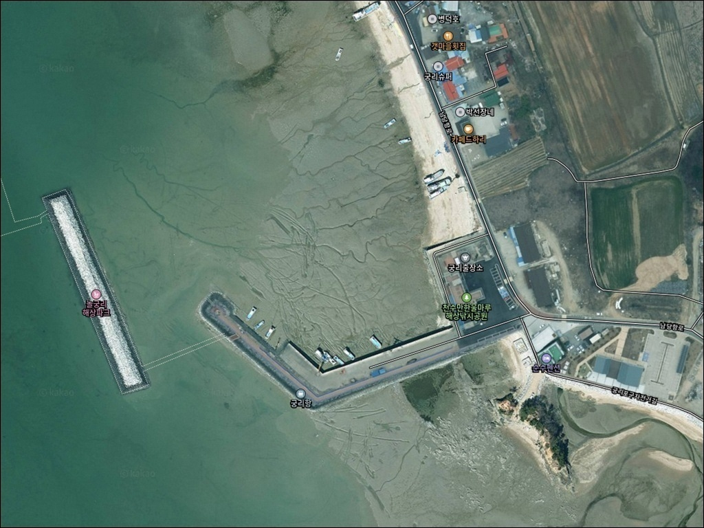
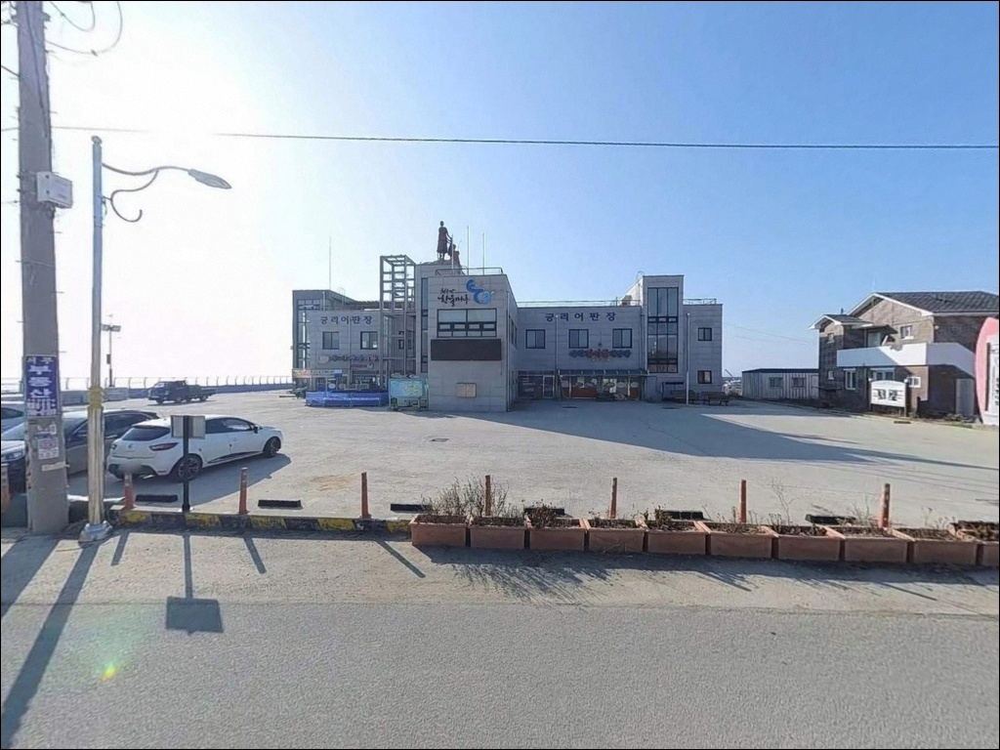
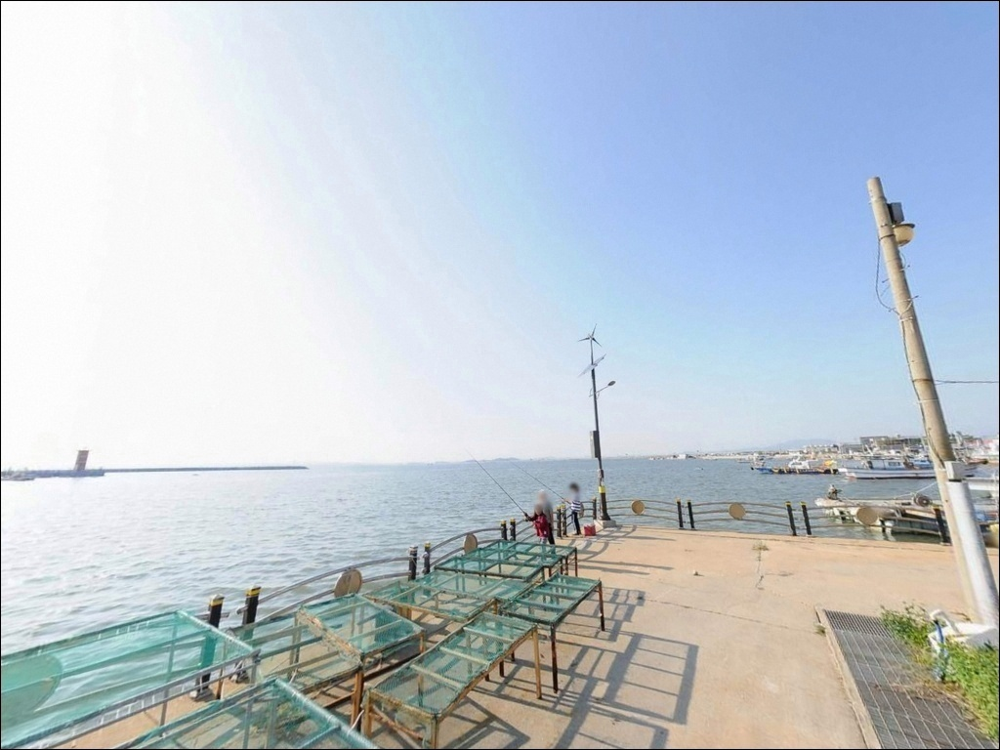
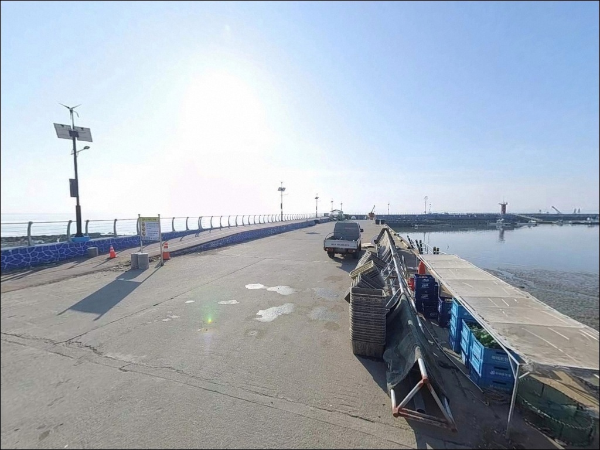
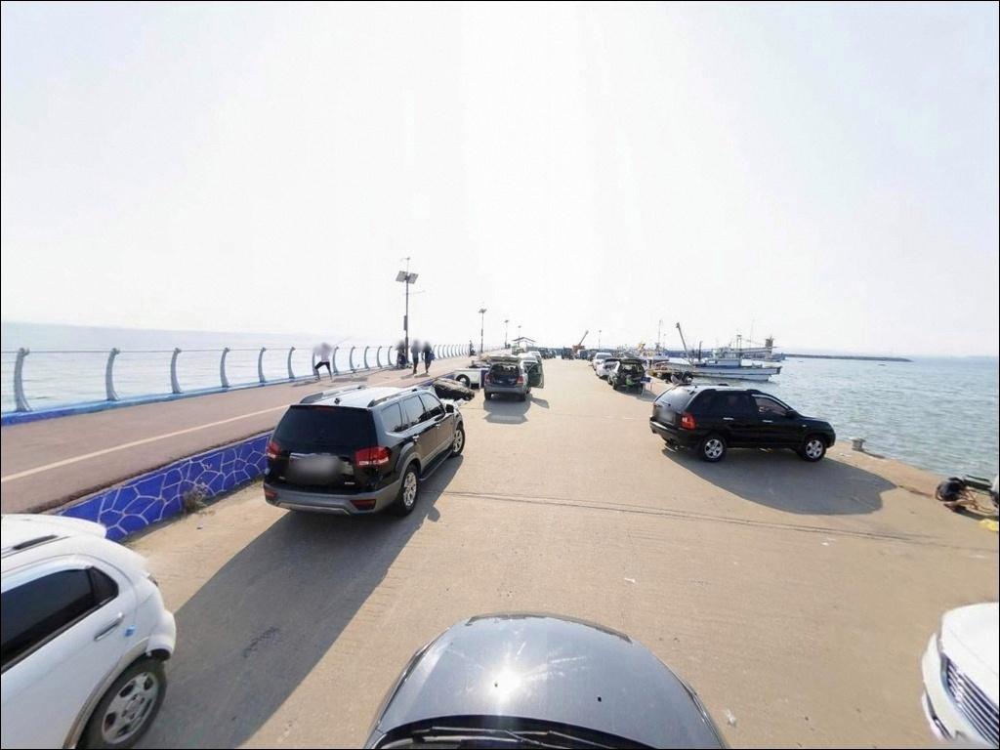
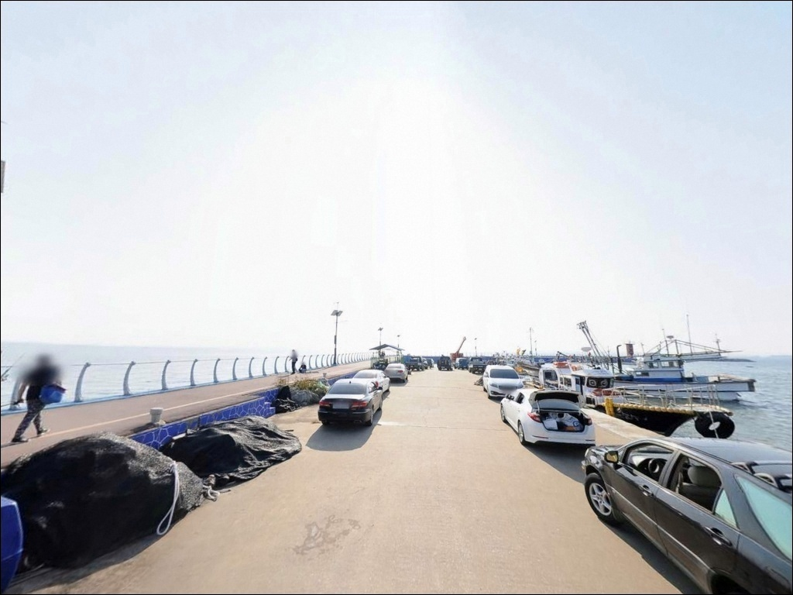
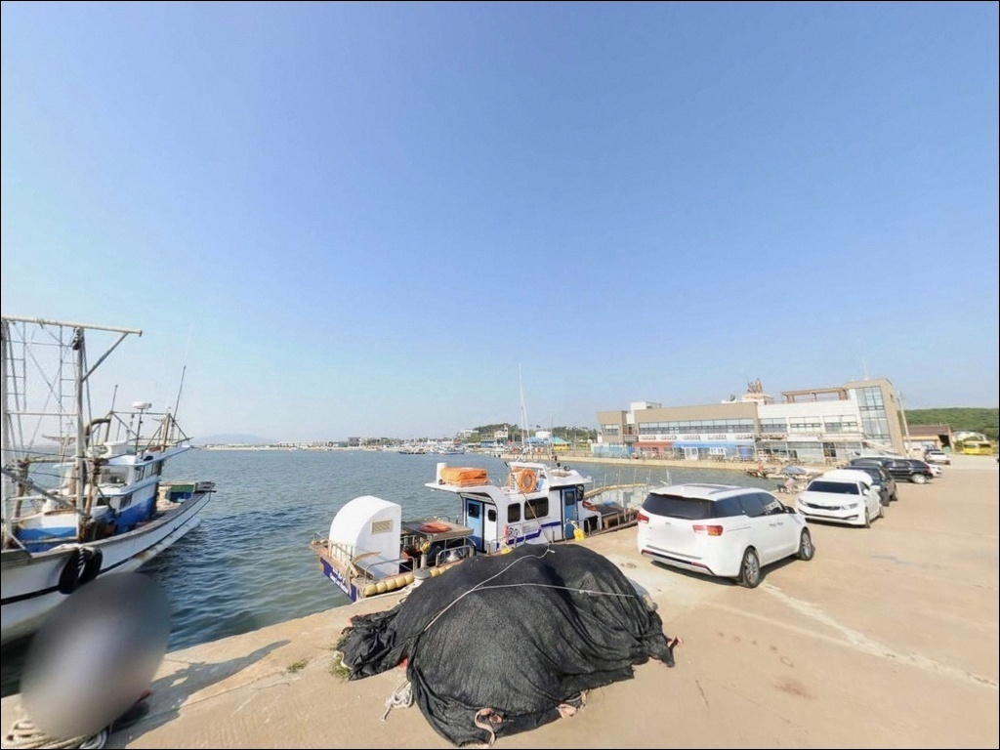
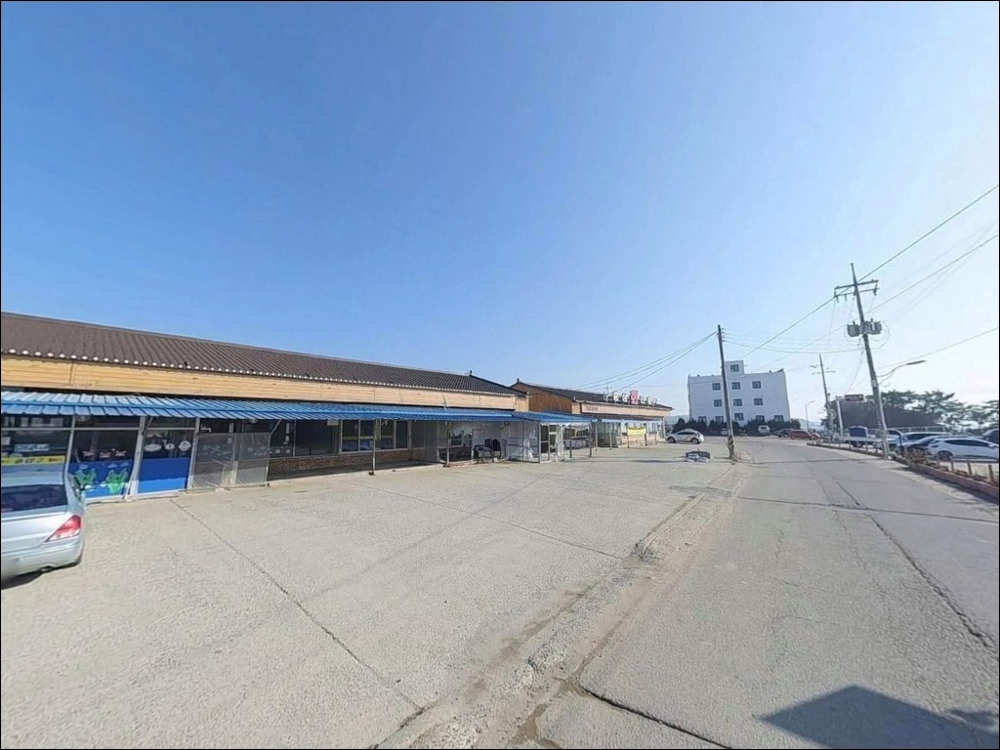
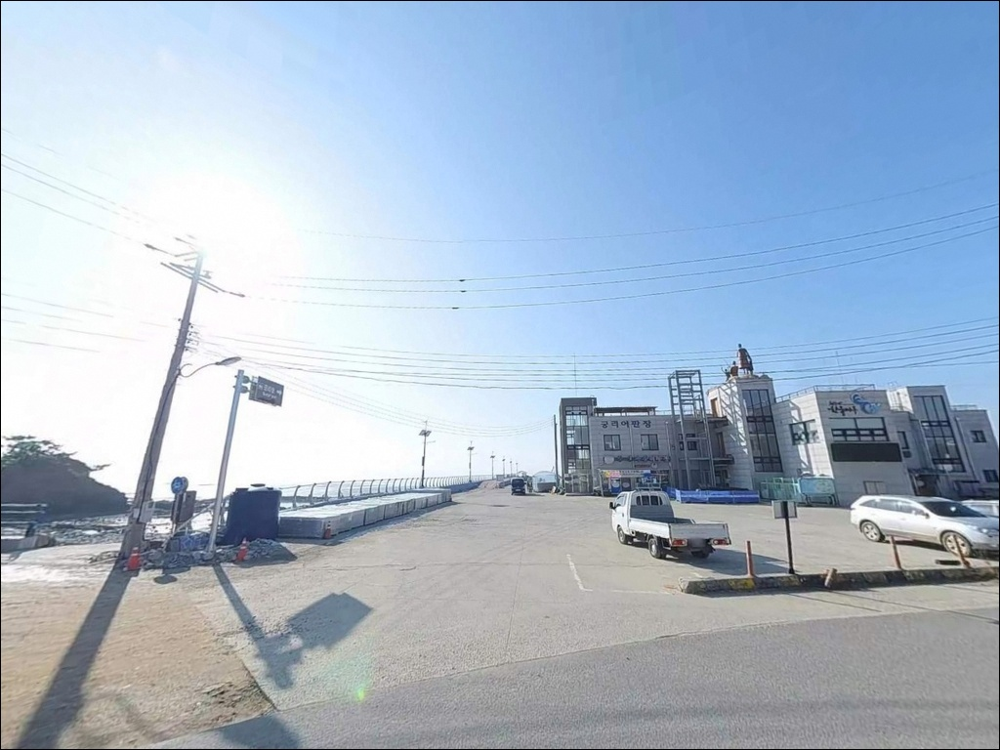

궁리항, 충남 홍성군 차박, 낚시 겸용 한적한 해안
이 페이지에는 광고(제휴 링크 포함)가 있으며, 광고 링크를 통해 구매하면 운영자가 판매 수익 또는 수수료를 받을 수 있습니다. 포인트 사진: 카카오맵 스카이뷰·로드뷰. 이 페이지의 지도·사진 이미지는 카카오맵의 실제 서비스 이미지와 다를 수 있습니다.


포인트 안내
궁리항
충남 홍성군 서부면 궁리 540-82
천수만 내만 포인트에서 물때 확인을 빠뜨리면,
간조 전후 수심이 낮아져
채비를 제대로 내릴 수 없는 상황을 맞게 됩니다.
궁리항은 조석간만의 차가 직접 낚시 가능 시간을 결정하는
물때 중심 포인트입니다.
만조 전후 2~3시간이 이 자리를 제대로 쓸 수 있는
실질적인 입장 타이밍입니다.
충남 홍성군 서부면 궁리에 자리한 궁리항은
서산 A지구 방조제 바로 남쪽,
천수만 초입에 위치한 소형 지방어항입니다.
1978년 지방어항으로 지정된 이곳은
방파제와 선착장 구조를 갖추고 있으며,
최근에는 놀궁리 해상파크가 조성되어
낚시와 관광을 겸하는 방문객이 늘고 있습니다.
이 글은 궁리항의 지형 구조,
진입 여건, 물때 판단 기준,
낚시 스타일별 공략 조건에 집중합니다.
조황 단정이나 특정 어종 보장은
이 글의 범위에 포함되지 않습니다.

1. 진입 동선과 포인트 접근성
궁리항은 홍성읍에서 서쪽으로 약 20km 거리에 있으며,
서부면 방면 도로를 통해 차량으로 진입합니다.
항구 입구까지 이어지는 진입로는
편도 1차로 수준의 농어촌 소로 형태로,
일반 승용차와 소형 SUV 기준으로는
진입에 큰 어려움이 없는 편입니다.
대형 캠핑카나 카라반을 동반하는 경우라면
항구 내부 회차 공간을 출발 전에 확인하는 편이 안전합니다.
소형 어항 특성상 공간이 넉넉하지 않을 수 있어,
대형 차량은 위성지도로 진입로와 회차 여건을 사전 점검하는 것이
헛걸음을 막는 조건입니다.
주차는 궁리어판장 주변 공터와
방파제 초입부 인근 공간을 활용하는 방식이 일반적입니다.
두 구간 모두 무료 주차가 가능하며,
주차 후 방파제까지의 도보 거리가 짧아
장비를 들고 이동하는 부담은 크지 않습니다.

2. 차박 환경과 야간 체류 여건
궁리항은 천수만 내만을 직접 면하는 소형 어촌 마을입니다.
외해 파도의 직접 영향은 내만 구조 특성상
상대적으로 완화된 편이라
파도 소음이 심한 편이 아닙니다.
다만 기상에 따라 천수만 방향에서
바람 영향이 있는 날은
사전에 해양기상 예보를 확인하는 편이 좋습니다.
놀궁리 해상파크 조성 이후
관광 목적의 방문객이 늘어나는 추세입니다.
어판장 주변과 해상파크 진입부에는 가로등이 있어
항 중심부는 야간에도 어느 정도 밝습니다.
완전한 고립형 차박보다는
관광지형 포구에서의 짧은 체류 방식에
가까운 여건으로 보는 편이 현실적입니다.
민가와 어판장이 인접한 구조상
야간 소음 관리에 주의가 필요하며,
차박 체류 전에 현장 안내 표지를 먼저 확인하고
주차 허용 구역 안에서 체류 여부를 결정하는 것이 기본 매너입니다.


3. 주변 편의시설 및 인프라 현황
궁리어판장이 항 내에 운영 중이며
수산물 직판 기능을 갖추고 있습니다.
어판장 앞에는 공용 화장실이 설치되어 있고,
항 인근 갯마을 회센터에서
수산물 식사를 해결할 수 있습니다.
놀궁리 해상파크는 하절기 07:00~23:00,
동절기 07:00~22:00 운영 시간으로 안내되어 있으며,
해상 산책로와 낚시 체험 시설이 포함된 구조입니다.
관광 인프라가 일부 갖춰진 덕분에
식사와 기본 편의는 항 주변에서 해결이 가능한 편입니다.
편의점과 마트는 반경 3km 이내 운영 여부를
출발 전 지도로 직접 확인하는 편이 좋습니다.
낚시 소품, 얼음, 간식류는
출발 전에 미리 준비해 가는 방식이 현실적입니다.

4. 방문 전 반드시 확인해야 할 준비사항
궁리항 방문에서 가장 먼저 점검할 것은 물때입니다.
천수만 내만은 조석간만의 차가 크고,
간조 전후에는 수심이 낮아져
채비를 제대로 운용하기 어렵습니다.
바다타임에서 홍성군 서부면 기준 물때를 확인하고,
만조 전후 시간대를 중심으로 출발 계획을 잡는 것이
이 포인트를 제대로 활용하는 기본 전략입니다.
서산 A지구 방조제 수문 방향에서
조류 흐름이 발생하는 타이밍이 있으며,
이 흐름이 방파제 끝단 낚시 조건에
영향을 주는 경우가 있습니다.
기상청 해양기상 예보를 당일 아침 한 번 더 확인하고,
풍향이나 파고 변화가 클 때는 입장 판단을 미루는 것이 안전합니다.
방파제와 선착장 석축은 미끄러운 구간이 있으므로
미끄럼 방지화 착용을 권장합니다.
구명조끼는 방파제 낚시 시에도 반드시 착용해야 하며,
야간 낚시 시에는 헤드랜턴을 준비해야 합니다.
어선 조업 동선과 어판장 주변 작업 공간을
침범하지 않는 자리 선정도 기본 매너입니다.

5. 지형 기반 낚시 여건 분석
궁리항은 서산 A지구 방조제 바로 남쪽,
천수만 내만 북쪽에 자리합니다.
남방파제가 외해 방향으로 뻗어 있으며
꺾이는 굴절 구간이 존재하는 구조로,
방파제가 꺾이는 지점과 끝단이
이 포인트의 핵심 낚시 자리입니다.
수심은 천수만 내만 특성상 전반적으로 완만하며
2~5m 내외로 추정됩니다.
방파제 외항 끝단 쪽이 내항보다 수심이 깊고
조류 흐름도 상대적으로 살아 있는 편입니다.
바닥은 모래와 뻘이 혼합된 서해 전형 구조로,
바닥층 어종의 이동 통로 역할을 하는 지형입니다.
서산 A지구 방조제 수문이 열리는 타이밍에
조류 흐름이 생기는 경우가 있으며,
이때 방파제 끝단 조건이 살아나는 경향이 있습니다.
정조 직후 조류가 움직이기 시작하는 구간이
이 포인트에서 입질을 기대해볼 수 있는 타이밍입니다.
출조 전에 궁리항 일대 최신 조황을 꼭 검색해 보시기 바랍니다.


6. 방파제 외항 쪽 조류가 살 때 루어 반응이 달라지는 조건
궁리항 방파제에서 가장 기본이 되는 낚시는 원투낚시입니다.
외항 방향으로 채비를 멀리 던져
바닥층을 탐색하면
망둥어, 붕장어, 우럭 계열을 기대해볼 수 있습니다.
만조 전후 물이 들어오는 타이밍에
채비를 천천히 끌어오는 방식이
이 포인트 바닥 구조에 맞는 공략법입니다.
루어낚시는 방파제 끝단 주변에서 시도할 수 있습니다.
소형 지그헤드와 그럽웜 조합의 라이트게임 방식이
이 지형 구조에 잘 맞으며,
조류가 움직이기 시작하는 타이밍에
외항 끝단 경계면을 따라 탐색하는 것이
루어 반응을 기대할 수 있는 방법입니다.
방파제 끝단은 조류 변화를 먼저 감지하는 자리로,
내항 쪽보다 루어 반응이 살아나는 구간입니다.
가을 시즌에는 천수만 주꾸미와 갑오징어 시즌과 겹칩니다.
서산 A지구 방조제 인근 해역이
주꾸미 워킹 낚시 포인트로 알려져 있는 만큼,
궁리항 방파제 주변에서도 가을 시즌에
에기와 주꾸미 전용 채비를 함께 준비하면
선택지가 넓어집니다.
찌낚시나 민장대낚시는
내항 쪽 얕은 수심 구간에서 가능합니다.
숭어와 망둥어를 대상으로
가볍게 즐기는 방식이며,
낚시가 익숙하지 않은 동행자가 있다면
내항 선착장 주변의 얕은 구간이
부담 없이 입문하기 좋은 자리입니다.

7. 대안 포인트와 플랜 B 동선
궁리항 조건이 여의치 않을 때
가장 먼저 고려할 대안은
서산 A지구 방조제입니다.
궁리항 북쪽에 인접해 있어
이동 거리가 짧고,
같은 천수만 해안선에서 루어·원투 방식으로
연계 출조가 가능한 포인트입니다.
반경 10km권의 남당항은
같은 홍성군 서부면에 위치한 대표 어항입니다.
규모가 크고 조황 정보가 상대적으로 많아
출발 전 검색이 수월하며,
방파제와 선착장 구조를 모두 갖추고 있어
다양한 낚시 스타일을 한 자리에서 운용할 수 있습니다.
궁리항을 처음 찾는다면
남당항을 기점으로 삼고 궁리항을 병행 탐색하는 동선이
효율적인 방법입니다.
홍성군이 바다낚시 포인트로 별도 안내하는 죽도항도
같은 권역 내 대안으로 고려할 수 있습니다.
천수만 해안선 내에서 복수 포인트를 묶어 돌아볼 때
궁리항-남당항-죽도항 순서로
이동하는 동선이 이 권역을 효율적으로 탐색하는 방법입니다.

물때만 맞추면
궁리항의 다른 면이 보입니다
원투낚시나 가벼운 루어낚시를 즐기는 낚시인이라면
궁리항 방파제의 지형 조건은 나쁘지 않습니다.
망둥어·붕장어·우럭류를 기대할 수 있는
서해 내만 전형의 구조이고,
가을 시즌에는 주꾸미·갑오징어와도 시즌이 겹쳐
에기 채비를 함께 준비하면 선택지가 넓어집니다.
반면 물때 확인 없이 간조 타이밍에 진입하거나,
인적이 드문 고립형 차박을 원하는 분이라면
이 포인트의 여건이 기대와 맞지 않을 수 있습니다.
물때 점검, 대형 차량 진입로 사전 확인,
현장 안내 표지 확인,
이 세 가지를 갖추고 방문하면
궁리항은 충분히 쓸 만한 서해 당일 포인트가 됩니다.
어판장에서 수산물 한 상 간단히 해결하고
방파제 끝단에서 조류를 읽으며
짧은 차박을 더하는 방식—
가볍고 실용적인 서해 생활낚시 여행을 원하는 분께
잘 맞는 포인트입니다.